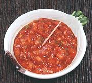

|
Ssamjang SauceKorea - Ssamjang | ||||
| Makes: Effort: Sched: DoAhead: |
2/3 cup ** 15 min Yes |
This sauce is very popular in Korea, used to accompany all manner of BBQ'd meats. It can also be used as a dip for raw vegetables, and in wraps. | |||
|
1/4 2 1 2 1/2 1 1/4 1 ------ 2 1/3 ----- ar ar ar |
c T t T T c cl --- T oz --- |
Doenjang (1) Gochujang (2) Sesame Toasted (3) Sesame Oil dark Honey Scallion Onion Garlic -- Options, any Walnuts Apple -- Garnishes, any Scallion sliced Chilis chopped Sesame Toasted |
Do Ahead - (10 min)
|